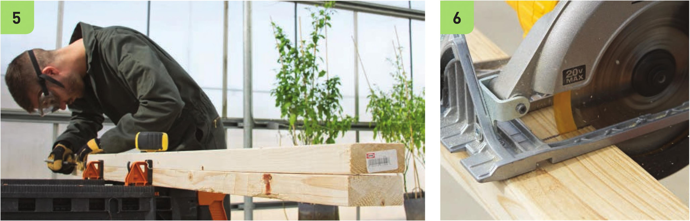
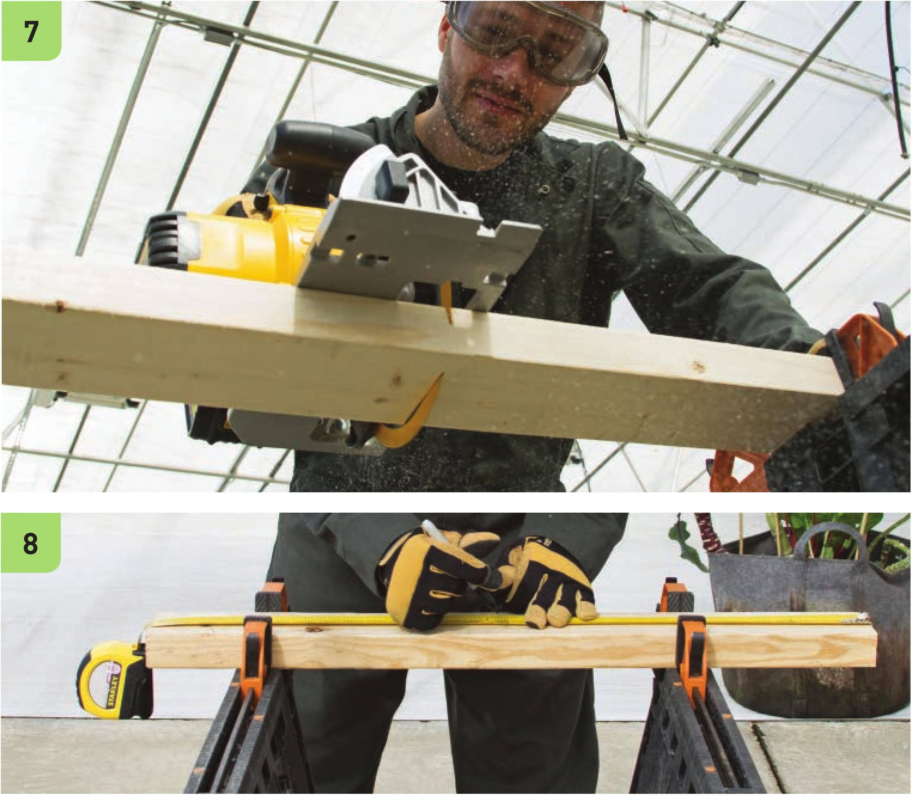

5 Measure and mark a 5' segment in both boards. Placing the boards on top of each other can help make sure they are cut to the exact same length. 6 Cut the two 2 x 4" x 8' boards along the marked lines to create two 5' segments and two 3' segments. 7 Measure, mark, and cut a 30" segment using one of the 3'2" x 4” segments from step 6. 8 Move the 30" 2 x 4" segment onto the sawhorses, fasten with clamps, and mark the center. 9 Use the 2" hole saw drill bit to create a 2" hole in the marked center of the 30" 2 x 4" segment. HYDROPONIC GROWING SYSTEMS 123

